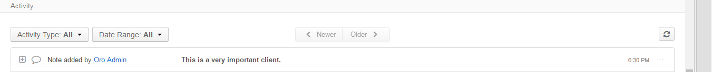
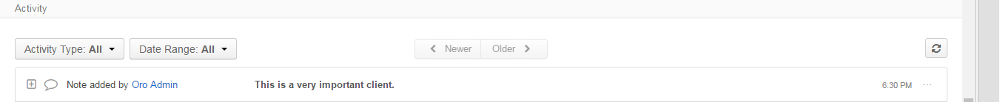
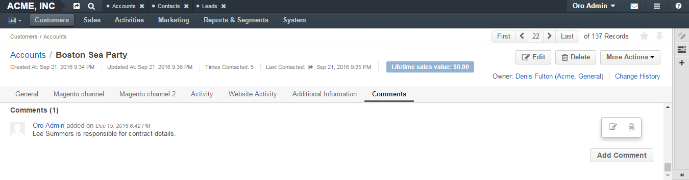
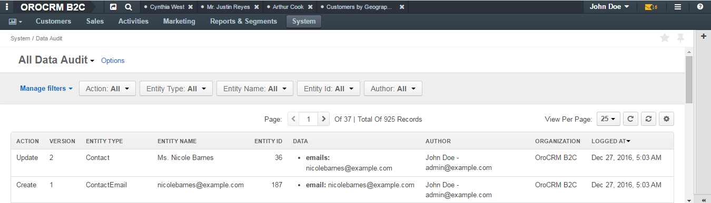
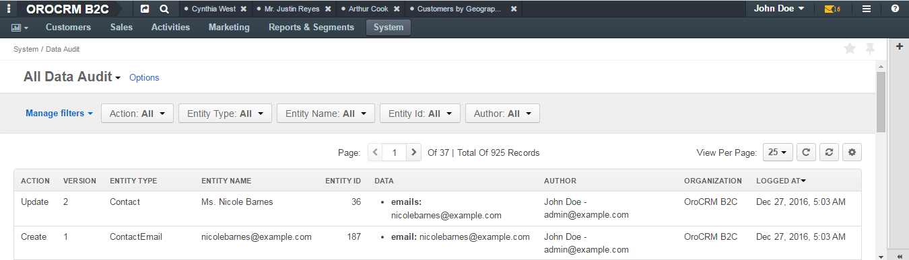
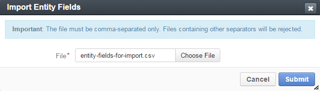

Actions with Entities
Actions
Create an Entity
In the main menu, navigate System>Entities>Entity Management.
Click the Create Entity button in the upper-right corner of the page. The New Entity page opens.
Click General Information and specify the following:
NameType the entity name.
Mandatory. The name must be at least 5 characters long, may contain only numbers and alphabetic symbols. The first symbol must be a letter. The name cannot be a reserved SQL word.
Caution
The Name value must be unique for every custom entity created. Failure to do so may cause partial update of the existing entity and failure of the schema update.
IconFrom the list, select the icon that will denote all entity records.
LabelType the label used to refer to the entity on the interface.
Mandatory The label must be at least 2 symbols long. Labels may be duplicated. However, in this case, it will be impossible to distinguish them on the interface. Therefore, it is better to create unique labels for different entities.
Plural LabelType the plural form of the label. It is used in titles of the menu items and grids related to the entity.
Mandatory The plural label must be at least 2 symbols long.
Description Type a short but meaningful description that can help you and other users understand the purpose and specifics of the created entity in future.

Click Communication & Collaboration and specify the following:
Share ScopesThis subsection defines whether the records of the entity can be shared with an individual user, or the whole business unit / organization.
Caution
This section is currently unavailable for custom entities.
- UserSelect this check box if the entity records can be shared with an individual user.
- Business UnitSelect this check box if the entity records can be shared with the whole business unit.
- OrganizationSelect this check box if the entity records can be shared with the whole organization.
ActivitiesDefines which activities users can add from the entity record view page. When you add an activity from the entity record page, the entity record appears as a context for this activity. For more information about the activities, see the Activities guide.
- EmailsSelect this check box to enable sending emails from the entity record view page.
- Calendar EventsSelect this check box to enable adding calendar events from the entity record view page.
- CallsSelect this check box to enable logging calls from the entity record view page.
- TasksSelect this check box to enable adding tasks from the entity record view page.
Enable NotesDefines whether it is possible to make notes on the entity record. Notes are made via the action button and are displayed in the Activity section on the entity record view page.
 

- YesSelect this value from the list to enable adding notes to the entity records.
- NoSelect this value from the list to restrict adding notes to the entity records.
Mandatory. Default value is No.
Enable CommentsDefines whether it is possible to leave comments on the entity records. Comments are displayed in the corresponding section on the entity view page. For more information on comments, see the Add Comment guide.
- YesSelect this value from the list to enable adding comments to the entity records.
- NoSelect this value from the list to restrict adding comments to the entity records.
Mandatory. Default value is No.
Click Attachments and specify the following:
Enable AttachmentsDefines whether it is possible to attach files to the entity records. Attachments are added via the action button and are displayed on the entity view page in the corresponding section. For more information on comments, see the Add Attachment guide.


- YesSelect this value from the list if you want to enable adding attachments to the entity records.
- NoSelect this value from the list if you want to disable adding attachments to the entity records.
Mandatory. Default value is No.
Max Allowed File Size, MbType the upper limit of an attachment size. Attachments whose size exceeds the specified value will not be allowed.
Allowed Mime TypesEnter the list of supported MIME types. If this field is left empty, the list defined in the system upload settings (see Upload Settings ) will be used.
The format of MIME types must follow these examples: application/pdf, image/*
Link Attachments To Context EntityIf an entity record is mentioned as a context in an email, this email appears in the Activity section of the entity record view page. When the email contains a file as an attachment, it is possible to reattach the file to the entity record itself. You can define whether the user will reattach the file manually when required or the system will reattach it automatically.
- ManualSelect this value from the list if users are to reattach files from emails to the entity record manually.
- AutoSelect this value from the list if the system are to reattach all the attachments from emails to the entity record automatically.
This field is available only when Enable Attachments is set to Yes. Mandatory. Default value is Manual.
Click Other and specify the following:
Ownership TypeRecords of which entity can be set as owners of the entity. For more information, see the Ownership Type guide.
- NoneSelect this value form the list if the entity records must have no owner (it can be also said that the owner is the system itself).
- UserSelect this value if the entity records must have users as owners.
- Business UnitSelect this value if the entity records must have business units as owners.
- OrganizationSelect this value if the entity records must have organizations as owners.
Mandatory. Default value is None.
AuditableThis subsection defines whether system will log what actions are performed with the entity records and who performed them, and users with the corresponding permissions will be able to check it in the Change History and Data Audit sections of the system. For more information about the data audit, see the Data Audit guide.
 

- YesSelect this value from the list to enable audit of records of the entity.
- NoSelect this value from the list to disable audit of records of the entity.
Mandatory. Default value is No.
Enable TagsDefines whether it will be possible to assign tags to entity records. For more information on data audit, see the Tags guide.

- YesSelect this value from the list to enable adding tags for the entity records.
- NoSelect this value from the list to disable adding tags for the entity records.
Mandatory. Default value is No.
Workflow Step in GridDefines whether to show the column with information about the current workflow step in the grid that contains all entity records. For more information on workflows, see the Following a Workflow guide.

- ShowSelect this value from the list to show the column with the workflow step in the grid on the All <Entity Name> page.
- HideSelect this value from the list if you do not want to show the column with the workflow step in the grid.
Default value is Show.
Click the Save and Close button in the upper-right corner.
Add fields to the entity. Fields contain all the details of the entity records. For example, if it is the ‘friend’ entity, you can add such fields as ‘first name,’ ‘last name,’ ‘phone,’ etc. For how to create a field, see the Create a Field section.
After you have added fields to the entity, update the schema. For how to do it, see the Update Schema section.
Important
You will be able to add entity records only after you have updated the schema.
Review an Entity
- In the main menu, navigate System>Entities>Entity Management.
- In the grid on the All Entities page, click the required entity.
- Review the entity settings. Please see details in the Entity Structure on the Interface guide.
Create a Field
Important
You can add custom fields only for custom entities and extendable system entities.
To create a field, follow the instructions provided in the Create a Custom Entity Field section.`
Import Fields
To simplify creation of entity fields, you can create a .csv file that will contain all the required fields with their properties defined and import it into OroCRM/OroCommerce.
Important
You can only import data saved in the .csv (comma separated values) format.
In the main menu, navigate System>Entities>Entity Management.
In the grid on the All Entities page, click the required entity.
In the Import Fields drop-down, click Download Data Template. The .csv file with sample data will be downloaded.
Check that the data you want to import is formatted the same way as in the downloaded template and that the structure of the .csv file you prepared for import is also the same as the structure of the downloaded file.
In the Import Fields drop-down, click Import Fields.
In the Import Entity Fields dialog box, click Choose File, select the .csv file you prepared and then click Submit.
Information in the dialog box reloads and the Import validation results section appears. Review the information in this section and if you are satisfied with the review results, click Import. If you wish to make any changes in the file or upload a different one, click Back to return to the previous step.

Update the schema to apply the changes. For how to do it, see the Update Schema section.
Update Schema
Once you have defined the necessary entities and their fields, you need to update the schemathe internal structure so that the system could know how the existing fields are interconnected and where to find them.
- Click the Update Schema button in the upper-right corner of the entity view page.
- In the Schema update confirmation dialog box, click Yes, Proceed.
Note
The schema update can take some time, so please be patient.
Caution
Please note that the schema update influences the overall system performance and updates the schema for all the created/updated entities.
Manage Unique Keys
You can define a set of fields by which the system will compare entity records to determine whether these records are distinct or not.
For example, by default you can create two contacts with the same information:
Jane Roe, born 1985-01-15, sales@example.com
The system assigns them different IDs and treats them as different records, but they look the same on the interface and actually represent the same person.
Now imagine that before adding contacts you have defined two sets of unique keys:
- First Name+Last Name+Birthday
- First Name+Last Name+Email
You create a contact:
Jane Roe, born 1985-01-15, sales@example.com
And your colleague Roger tries to add Jane as a contact too:
Jane Roe, sales@example.com
The system checks:
- The first names and the last names are the same, but the birthday is different (not specified in the second case), may be these are different contacts.
- The first names and the last names are the same, but the email is the same too, so it must be the same contact.
As the result, the system informs Roger that this contact already exists in the system.
To manage unique keys do the following:
In the main menu, navigate System>Entities>Entity Management.
In the grid on the All Entities page, click the required entity.
Click the Manage Unique Keys button in the upper-right corner of the page.
On the Unique Keys page, click +Add.
Specify the required information:
- NameMandatory. The set name on the interface. It is used just for reference.
- KeyMandatory. The fields that will be included in this set. Hold the CTRL key to select several fields.
If you need to add another set, repeat steps 45.

If you need to delete a set, click the x icon next to the set name.
Click the Save button in the upper-right corner of the page.
Edit an Entity
Important
Which properties are editable for system entities depends on the configuration and is based reasonable and safe for the system performance and operation.
In the main menu, navigate System>Entities>Entity Management.
In the grid on the All Entities page, choose the entity you want to edit, click the ellipsis menu at the right end of the corresponding row and then click the Edit icon.
Make the required changes according to the description provided steps 36 of the Create an Entity section.
Important
You cannot change the name of the entity.
You cannot change the ownership type of the entity.
There are also several additional fields in the Other section that are available only when you edit an entity:
- Field Level ACLSelect this check box to define that permissions can be set on individual fields of this entity. For more information about field level ACLs, see the Permissions for an Entity Field (Field Level ACLs) guide.
- Show RestrictedSelect this check box if you enabled Field Level ACL and are going to disable editing of some fields of the entity records but still want users to review disabled fields on the interface. Fields disabled for modifying will appear dimmed on the interface. For more information about field level ACLs, see the Permissions for an Entity Field (Field Level ACLs) guide.
- SearchableDefines whether records users can search for and find records of this entity via the search in OroCRM/OroCommerce.
- YesSelect this value from the list if users can search for and find records of this entity.
- NoSelect this value from the list if records of this entity are invisible for search.
- Applicable OrganizationsSelect in which organizations this entity will be available. The default value is All. To specify a particular organization, clear the All check box and click the field that appears to choose the organization from the list.
Click the Save And Close button in the upper-right corner of the page.
Update the schema. For how to do it, see the Update Schema section.
Delete an Entity
Important
You can delete only custom entities that have no records.
- In the main menu, navigate System>Entities>Entity Management.
- In the grid on the All Entities page, choose the entity you want to delete, click the ellipsis menu at the right end of the corresponding role and then click the Delete icon.

- In the Deletion Confirmation dialog box, click Yes.
Note
Reload the page when you see the notification about item deletion.
If you can still see the entity in the grid on the All Entities page, you may need to update the schema. For how to do it, see the Update Schema section.
Links
For the overview of the entities, see the Entities guide.
For the description of the entity view page, see the Entity on the Interface guide.
For the information about entity fields, see the Entity Fields guide.